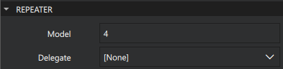
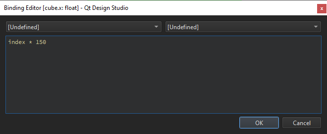
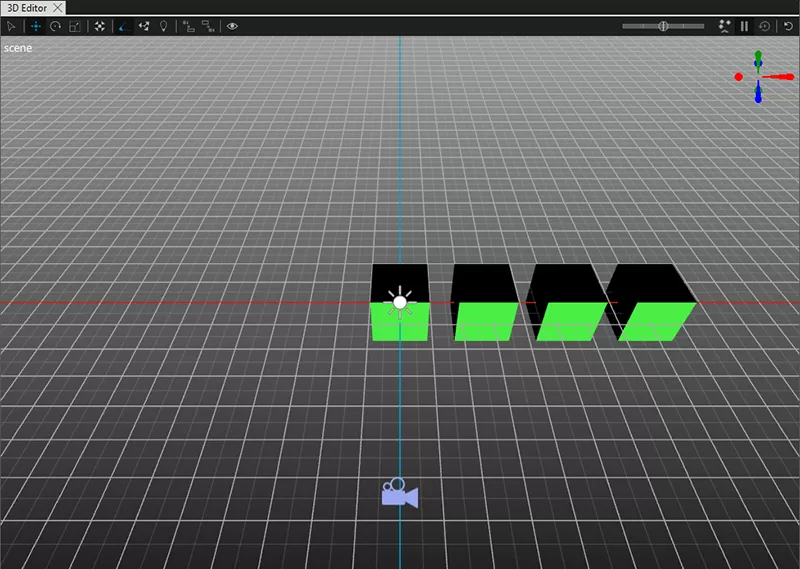
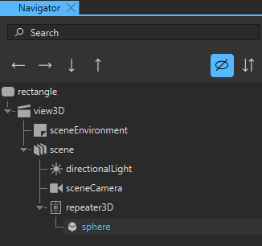
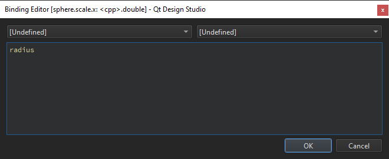
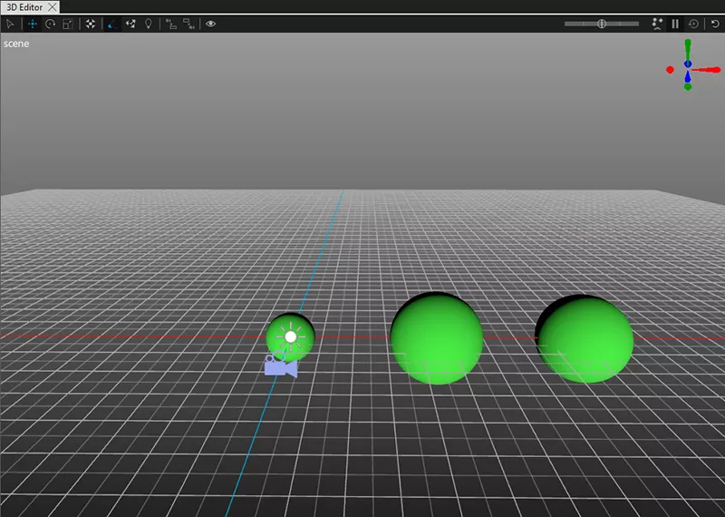

Repeater3D
Note: The Repeater3D component is released as a tech preview feature in Qt Design Studio 2.2, and its functionality will be improved in future releases.
The Repeater3D component is used to create multiple similar items. Like other view types, Repeater3D needs a model and a delegate. The delegate sets the item to use and the model sets the structure of the items in the Repeater3D component.
The model can be any of the supported data models. Additionally, like delegates for other views, a delegate for the Repeater3D can access its index within the repeater, as well as the model data relevant to the delegate.
Note: Repeater3D owns all items it instantiates. Removing or dynamically destroying an item created by Repeater3D results in unpredictable behavior.
Note: Repeater3D can only repeat objects derived from Nodes.
For more information, see Repeater3D in the Qt Quick 3D documentation.
Repeater3D Properties
Model
The Model property specifies the model providing data for the repeater. You can only use the Model property in the Properties view to set a numeric model or to bind to QML based models. You can use the Code view to define any of the supported data models as the value of the Model property:
- A number that indicates the number of delegates to be created by the repeater.
- A model, such as a ListModel component, or a QAbstractItemModel subclass.
- A string list.
- An object list.
The type of model affects the properties that are exposed to the delegate.
Delegate
The Delegate property specifies a template defining each object instantiated by the repeater. Currently, the Delegate property needs to be defined in code using the Edit mode or the Code view. Delegates are exposed to a read-only index property that indicates the index of the delegate within the repeater. For more information, see Delegate in the Qt Quick 3D documentation.
If the model is a model object, such as a ListModel, the delegate can access all model roles as named properties, in the same way that delegates do for view classes like ListView.
Adding a Repeater3D Component with a Numeric Model
This section explains how to add a Repeater3D component with a numeric model to your Qt Design Studio project.
To add a Repeater3D component:
- Drag a Repeater3D component from Components to scene in Navigator.
- Select repeater3D in Navigator and in Properties, set Model to 4.

Now, you have set up the Repeater3D component to use a numeric model that draws four instances of the same item. Next, you need to add the item to draw. In this example we are using a Cube.
- From Components, drag a Cube to repeater3D in Navigator. Now, four cubes are drawn to the scene, but they are drawn to the exact same place.
- Select cube in Navigator and in Properties select
 next to Translation > X.
next to Translation > X. - Select Set binding to open Binding Editor.
- In the binding editor, enter
index * 150. This sets the X location to increase by 150 for each of the cube instances.
- Select OK and go to the 3D view to see the result.

Adding a Repeater3D Component with a List Model
This section explains how to add a Repeater3D component with a ListModel to your Qt Design Studio project:
To add a Repeater3D component:
- Drag a Repeater3D component from Components to scene in Navigator.
- You need to enter the QML code for the ListModel manually. Go to the Code view and enter the following code somewhere inside the root object:
ListModel { id: planetModel ListElement { name: "Mars" radius: 3.39 } ListElement { name: "Earth" radius: 6.37 } ListElement { name: "Venus" radius: 6.05 } }The default root object for a Qt Design Studio project is Rectangle, so you can paste the ListModel code, for example, like this:
Rectangle { width: Constants.width height: Constants.height color: Constants.backgroundColor ListModel { id: planetModel ListElement { name: "Mars" radius: 3.39 } ListElement { name: "Earth" radius: 6.37 } ListElement { name: "Venus" radius: 6.05 } } View3D { id: view3D anchors.fill: parent ... - In the Code view, add
model: planetModelto the Repeater3D object to tell that you want to use your ListModel as the model for the Repeater3D object.Repeater3D { id: repeater3D model: planetModel }
Now, you have set up the Repeater3D component to use a ListModel to draw the items. Next, you need to add the item to draw. In this example we are using a Sphere.
- From Components, drag a Sphere to repeater3D in Navigator.

- Select sphere in Navigator and select next to Scale > X.
- Select Set binding to open Binding Editor.
- In the binding editor, enter
radius. This sets the X scale to the radius value defined in the ListModel for each of the sphere instances.
- Select OK.
- Repeat steps 2 to 5 for Scale > Y and Scale > Z.
Now, three spheres of different size are drawn but they are drawn in the same position so you need to change the position to see all spheres.
- Select sphere in Navigator and select next to Translation > X.
- Select Set binding to open Binding Editor.
- In the binding editor, enter
index * 1000. This sets the X location to increase by 1000 for each of the sphere instances. - Select OK and go to the 3D view to see the result. You need to zoom out to see all the spheres.
